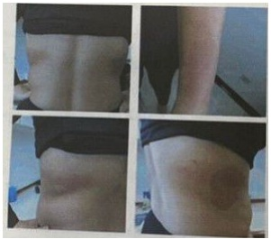
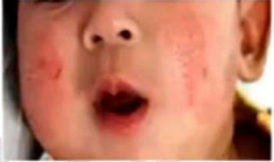
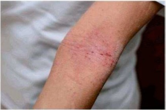
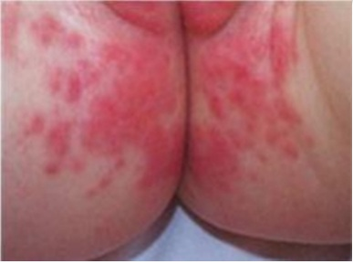
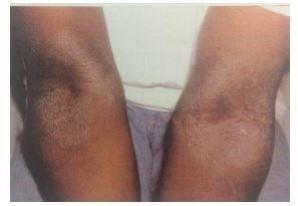
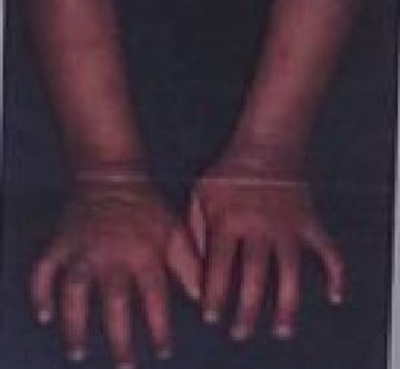

Uma paciente, do sexo feminino, chega à USF solicitando consulta porque há vários dias vem apresentando lesões eritematosas, descamativas e muito pruriginosas localizadas em regiões laterais De E do tórax, dirigindo se para região posterior, contornando o tronco de forma simétrica. Refere também lesões semelhantes em antebraço esquerdo, próximo ao punho que surgiram da mesma forma que as lesões em tronco inicialmente formavam pápulas eritematosas, evoluindo para vesículas de conteúdo seroso e depois descamação, sempre acompanhadas de muito prurido. Informa praticar atividade física regularmente e nos últimos tempos tem se dedicado à natação e corrida, mas no momento não está conseguindo porque sente piora após a realização dos exercícios. Fotos abaixo. Diante da história clínica e imagens das lesões, qual, na sua opinião, o diagnóstico mais provável desta paciente?

Menina de dois anos consulta em pronto atendimento com queixa de lesões de pele em membros. Mãe refere que as lesões bastante pruriginosas surgiram há mais ou menos duas semanas, e que as regiões acometidas estão aumentando. Ao exame, o Médico observa lesões eritemato-descamativas bilaterais em fossa poplítea e cubital, com base hipocrômica e bastante ressecada. De acordo com os dados descritos, qual a hipótese diagnóstica mais provável?
Paciente de 5 meses de idade, apresenta, há mais ou menos 40 dias, lesões cutâneas com eritema, pápulas, vesículas e formação de crostas, com prurido intenso, localizadas em face, nas regiões malares, frontal e mentoniana, poupando o maciço central. O diagnóstico mais provável, dentre os abaixo, é
A enfermeira da saúde da família do bairro avaliou um bebê de 2 meses e meio de idade que foi levado à unidade para consulta de puericultura. Durante conversa, a mãe relatou que a criança, nos últimos dias, estava chorando muito, mais irritada em algumas horas do dia. Negava febre, perda de peso ou alteração do apetite. Ao retirar a fralda para examinar a criança, a enfermeira percebeu área de pele com eritema importante e áreas de abrasão, acometendo o períneo, raiz das coxas, parte das nádegas, se estendendo até a região perianal. O médico foi chamado, avaliou a criança e orientou o tratamento, medidas de cuidado e prevenção. Qual o melhor tratamento medicamentoso para o quadro desta criança?
Paciente de 15 meses de idade, masculino em seguimento no ambulatório de pediatria geral com queixa de lesão de pele pruriginosa, prejudicando seu sono. Paciente com vacinação atualizada, com história prévia de 2 episódios de sibilância, sem necessidade de internação. Mãe com antecedente de asma e pai com rinite alérgica. Ao exame clínico, paciente com lesão eczematosa em face, em região malar, poupando maciço central, e em couro cabeludo e com dupla prega de Dennie- Morgan. Pele xerótica, com lesões eritematosas e pápulas eritematosas com algumas crostas pescoço, sem lesões em região de fralda. Sem outras alterações no exame clínico. Indique o diagnóstico e o tratamento:

Eventos adversos podem ocorrer quando a pele entra em contato com agentes externos e a manifestação cutânea mais comum é o eczema, que pode ser de natureza alérgica, caracterizando a dermatite de contato alérgica (DCA) ou irritante, que caracteriza a dermatite de contato por irritante (DCI). Sobre o diagnóstico diferencial das dermatites, assinale a opção correta:
Menor com oito anos de idade tem lesões de pele recorrentes desde os quatro meses de idade. Apresenta lesões escamosas e crostosas de distribuição periférica na face e nas regiões ante cubitais e poplíteas. Mãe refere prurido intenso. A mãe nega casos semelhantes na família e refere ter asma e que a irmã tem rinite. A melhor conduta terapêutica é prescrever:
Mulher, 17 anos, apresenta desde os 6 meses de idade lesões de pele recidivantes e pruriginosas. Há 1 ano as lesões estão menos frequentes, porém ainda se intensi cam no inverno. O quadro atual é o mostrado na figura: Qual é a condição médica mais associada ao diagnóstico desta paciente?

Laís, 5 anos, evolui com lesões eczematosas em região cervical, pregas cubitais e poplíteas, pruriginosas que interferem com o sono há 3 anos. A mãe refere piora clínica após contato com poeira, uso de perfumes e amaciantes nas roupas. No último ano sofreu seis episódios de sibilância e apresenta história familiar de atopia. Em relação ao diagnóstico clínico, é INCORRETO
A dermatite seborreica é uma dermatose inflamatória comum. Sobre essa doença na faixa etária pediátrica, considere as seguintes afirmativas: 1. A dermatite seborreica é comum a partir dos 3 anos de idade, acometendo principalmente a idade escolar. 2. O prurido é frequente, de leve a moderado, e pode interferir com o sono. 3. As lesões de dermatite seborreica que afetam recém-nascidos devem levar à suspeita de doenças sistêmicas como a histiocitose. 4. A sua siopatologia envolve fatores hormonais (andrógenos) e tem sido descrito o papel da Malassezia no processo inflamatório. Assinale a alternativa correta.
A dermatite atópica é uma doença inflamatória cutânea crônica e recidivante que acomete principalmente pacientes da faixa etária pediátrica. Assinale a alternativa incorreta sobre essa doença:
Fazem parte do tratamento inicial de primeira linha da dermatite atópica:
Mulher, 32 a, técnica de enfermagem há três anos. Refere o aparecimento de lesões nas mãos há 4 meses, que melhoram com uso de pomada de corticoide. Retornaram há dois meses após as férias. Exame físico: Pele: lesões eritemo- descamativas em região dorsal das mãos e regiões interdigitais bilaterais. O DIAGNÓSTICO E O EXAME A SER SOLICITADO SÃO:
Menino com 3 anos de idade apresenta quadro de prurido intenso principalmente à noite há uma semana. No exame físico observa-se pele xerótica, com lesões em superfícies extensoras de braços e pernas, com áreas de exsudação e crostas. A família informa que a criança apresenta esse quadro de forma recorrente. Antecedentes pessoais: a criança nasceu a termo, peso 2950g, quadros de sibilância recorrente entre os seis meses e dois anos de idade. A hipótese diagnóstica é?
A dermatite atópica é uma dermatose inflamatória de curso crônico, recidivante, de etiologia desconhecida, de início precoce, caracterizada por: prurido, xerose, lesões eczematosas de morfologia e distribuição típicas. É a dermatose mais frequente na infância, perfazendo 1% das consultas em pediatria, e 20% das consultas dermatológicas em crianças. Atinge de 10 a 30% da população. Em relação a dermatite atópica, assinale a alternativa INCORRETA:
Menino de 3 anos, faz acompanhamento irregular no ambulatório de imunologia devido a dermatite atópica. Há 4 dias está apresentando lesões em fossa poplítea que iniciaram-se vesiculares evoluindo para bolhosas com crostas amareladas e hiperemia local. Há 1 dia apresentou 1 pico febril de 38oC. Qual a opção terapêutica para esta criança?
Lactente de 10 meses apresenta lesões intermitentes em face há 2 meses. Ao exame, apresenta placas eritematosas em região malar bilateralmente, poupando o maciço central. A principal hipótese diagnóstica é:
Maria, 29 anos, leva seu lho Carlos, 2 meses, que apresenta lesão hiperemiada moderada em região inguinal bilateral há 2 dias. Ao examinar a criança, a Dra. Sara faz o diagnóstico de dermatite de fraldas. A melhor conduta é:
No quadro clínico da Dermatite Atópica observa-se:
Lactente, 3 meses, há 15 dias com eritema intenso em nádegas e porções internas das coxas. Há dois dias com piora do eritema e aparecimento de lesões-satélite papulovesiculares minúsculas. A CONDUTA É:
Em escolar de três anos apresenta pele seca e áspera, pruriginosas nas pregas ante cubitais e poplíteas com espessamento da pele. Sua mãe refere início por volta de um ano de idade, havendo piora no calor. A principal hipótese diagnóstica, nesse caso é
Lactente, 8 meses, masculino, apresentou diarreia aguda terminada há 5 dias, é levado ao pediatra apresentando assadura. O exame físico só apresenta alterações na região perianal, genital e nádegas: pápulas eritematosas, isoladas e con uentes, com superfície erosada e pequenas ulcerações rasas de bordas bem delimitadas, poupando as dobras. A mãe refere que vem usando creme de barreira sem sucesso. Considerando a principal hipótese diagnóstica o tratamento local a ser feito nesse momento é o seguinte:
A dermatite atópica é uma condição dermatológica crônica e pruriginosa, que muitas vezes tem curso recidivante. Sobre essa dermatose, assinale a alternativa correta.
Escolar de 9 anos em acompanhamento por dermatite atópica há vários anos, iniciou há 3 dias com lesões cutâneas novas sobre as áreas da dermatite atópica. Estas lesões são vesicopustulares múltiplas e pruriginosas. As lesões vesiculares são umbilicadas, tendem a se unir e formam crostas. Em relação ao caso, analise as assertivas abaixo. I - O diagnóstico mais provável é eczema variceliforme de Kaposi. PORQUE; II - É uma infecção viral causada pelo vírus herpes simples sobre uma pele acometida por lesão primária.
A região do períneo nos lactentes é frequentemente acometida po r doenças cutâneas com diferentes etiologias. Para o diagnóstico correto e instituição do tratamento adequado, é necessário realizar a anamnese completa e exame físico detalhado. Sobre esse tema, considere as seguintes afirmativas: 1. Na dermatite da área de fraldas por irritante primário, as áreas convexas do períneo são acometidas com lesões eritematosas. 2. Na candidíase perineal, o eritema é intenso, as pregas inguinais são poupadas e a ausência de pápulas satélites caracterizam o diagnóstico. 3. Na dermatite de fraldas por irritante primário, os antibióticos tópicos estão indicados, assim como o aumento da frequência de trocas. 4. Na dermatite seborreica, as lesões ocorrem nos lactentes, acometem as pregas inguinais e axilares, além do couro cabeludo. Assinale a alternativa correta.
Menor, 6 anos, é atendido em setor ambulatorial com queixa de lesões pruriginosas, recidivantes localizadas em regiões exurais de joelhos e cotovelos com eritema e liqueni cação. Portador de rinite alérgica e asma parcialmente controlada. Assinale a afirmativa que não corresponde ao diagnóstico clínico do paciente.
A medida terapêutica mais efetiva para tratar a dermatite de fraldas é:
Marina leva seu lho Pablo de 4 meses para consulta de puericultura. Ela está amamentando e oferece apenas água nos intervalos. A mãe está preocupada, pois seu lho está evacuando uma vez a cada 5 dias, fezes pastosas amolecidas e amarelas. Outra preocupação é que ele ainda não balbucia sons bilabiais (mã, pã). Ao exame físico a estatura encontra-se no escore zero e o peso entre o zero e menos 2 (0 a -2). Nota-se na região perineal, placas eritematosas, com pápulas con uentes, bordas demarcada, acometendo escroto e pregas inguinais. Nota-se a presença de lesões satélites. Na avaliação do desenvolvimento, Pablo quando colocado em decúbito ventral levanta a cintura escapular, apoiado no antebraço, brinca com as mãos e grita. A criança apresenta reflexo de Moro incompleto e a marcha reflexa está presente. As lesões descritas na região perineal são compatíveis com o diagnóstico de:
Pré-escolar, quatro anos de idade, é levado à UBS pela mãe com queixa de coceira e lesões de pele frequentes, desde os seis meses de idade. Atualmente apresenta lesões eczematosas nas superfícies exoras, principalmente nas dobras poplíteas, antecubitais, pulsos e transição glúteo-coxas. Tem áreas de hiperemia e descamação variáveis, com algumas lesões com componente de liqueni cação. O prurido é intenso, mais acentuado à noite, comprometendo o sono. Já usou vários hidratantes, pomadas de corticóide e anti-histamínico oral com melhoras parciais e transitórias. O diagnóstico MAIS PROVÁVEL é:
RN com 21 dias de vida apresentando em região glútea e genital pápulas que con uem em placas, pústulas, lesões satélites e algumas pústulas rompidas de base eritematosa. Qual o diagnóstico?
Paciente de 1 ano, feminino, com lesões de pele pruriginosas e recidivantes principalmente em regiões exurais de braços e pernas, desde os 4 meses de idade, apresenta lesões também na face e na região do tronco. Mãe refere ter feito vários tratamentos para escabiose com melhoras ocasionais, mas que as lesões retornavam. A criança tem um sono agitado, com di culdade para dormir constante e não deixa ninguém em casa dormir há alguns dias. Associado apresenta pele bastante seca e lesões, ocasionadas por picadas de inseto em braços e pernas, que a mãe refere que a criança coça bastante também. Neste caso, a melhor conduta é:
A fototoxicidade causada pelo contato do limão com a pele é atribuída a:
Um homem de 72 anos de idade, sofre uma laceração no dedo indicador esquerdo, enquanto cozinhava. Ele imediatamente lava a área, aplica neomicina e faz um curativo oclusivo. Ele muda o curativo e reaplica a medicação duas vezes ao dia. Dois dias mais tarde, ele desenvolve prurido e vermelhidão no local da ferida. Nega febre ou outros sintomas sistêmicos. Possui história de diabetes mellitus tipo 2. Sua única medicação é metformina. Ao exame físico, sinais vitais estão normais. O dedo indicador esquerdo mostra uma ferida super cial de 1 cm com margens bem aproximadas sem drenagem de pus ou dor à palpação. Há pápulas pontuais e vesículas em uma área que se estende de 0,5 cm em torno do local laceração em um padrão retangular de uma aproximação da bandagem. O restante do exame físico é normal. Qual dos seguintes diagnósticos é o mais provável?
O escore para avaliação da gravidade da dermatite atópica, denominado Scoring Atopie Dermatitis (SCORAD), leva em consideração quais critérios?
Qual das seguintes situações de vida um adolescente tem maior probabilidade de sofrer de rinoconjuntivite sazonal, eczema atópico e dermatite?
Refere-se negativamente à dermatite atópica:
Dermatite atópica (eczema atópico, eczema infantil) é uma doença crônica que causa in amação da pele, levando ao aparecimento de lesões e coceira. Inicia-se quase sempre nos primeiros anos de vida, principalmente dos 3 aos 6 meses de idade. (...) Há estudos que apontam 70% dos pacientes com antecedentes familiares de atopia (asma, rinite alérgica ou dermatite atópica). (PERNETTA, Cesar. Terapêutica pediátrica - Livraria Atheneu. São Paulo. p.403.). A dermatite atópica distingue-se da dermatite seborreica por alguns fatores, exceto:
A região do corpo mais afetada na dermatite atópica do lactente é:
A dermatite atópica é uma das doenças dermatológicas mais frequentes no consultório de pediatria e por vezes até no serviço de pronto atendimento. O reconhecimento da patologia e o início do tratamento com as orientações adequadas deve ser feito o quanto antes. Assinale a alternativa correta:
Assinale qual das alternativas seguintes apresenta o metal que causa mais frequentemente dermatite de contato.
Recém-nascido de 20 dias é trazido pela mãe na UBS para consulta, pois a mesma está muito preocupada com lesões em face e couro cabeludo que apareceram há 5 dias na criança. As lesões apresentam as seguintes características: placas amareladas de aparência cérea, bem aderidas, em couro cabeludo, na região frontal, em malares e pregas nasolabiais. Qual o diagnóstico mais provável?
Um menino de 5 anos apresenta há duas semanas um quadro de manchas hipopigmentadas no rosto. As lesões não são pruriginosas e apresentam uma na descamação. Não há eritema, nem formação de crostas, tampouco bordas elevadas ou dor. As bordas da hipopgmentação não são bem demarcadas e não há outras áreas hipopigmentadas. O diagnóstico MAIS PROVÁVEL é:
Um menino de seis anos, com dermatite atópica de difícil controle há uma semana, queixa-se de febre, adinamia e piora das lesões das pregas antecubitais, pescoço e face. Ao exame, apresenta adenomegalia generalizada e sobre as placas de eczema, grande número de exulcerações pequenas e algumas vesículas umbilicadas. Neste caso, o diagnóstico é:
Qual a alternativa CORRETA em relação à dermatite atópica na infância?
A Dermatite Atópica é uma doença inflamatória crônica da pele, cuja prevalência vem aumentando nas últimas décadas. O diagnóstico é basicamente clínico. Assinale a assertiva CORRETA de acordo com a apresentação clínica para cada faixa etária:
A dermatite atópica é a doença cutânea mais frequente na infância, os sintomas têm início nos primeiros 6 meses de vida em 45% dos pacientes, e em 85%, antes dos 5 anos. O diagnóstico é clínico e as lesões têm características diferentes quanto ao aspecto e localização, conforme a faixa etária. Levando em consideração os dados apresentados, assinale a alternativa CORRETA.
Um escolar de 8 anos apresenta há 1 semana lesão eritematosa e descamativa ao redor dos lábios, após o início do inverno. A lesão é bem delimitada, circulando a região perioral com leve ardência local. A mãe refere que ele “lambe ” a região quando está seca. Levando em consideração os dados apresentados, é correto afirmar que se trata de:
Um pré-escolar de 5 anos iniciou, há 1 ano, quadro de prurido cutâneo difuso e lesões eritematosas, mais acentuadas nos membros inferiores e na face. Por orientação do pediatra, já usou diversos hidratantes, corticoide oral e tópico e anti- histamínicos por períodos prolongados, com melhora apenas parcial. O prurido é intenso, predominantemente noturno, e compromete o sono, piorando com o calor, com o sol e quando se irrita. Ao exame, presença de eritema cutâneo difuso, mais acentuado nas regiões exurais, xerose acentuada, descamação eritematosa nas pálpebras, na fronte e nas regiões flexurais, além de placas eritematodescamativas, escarificadas e ulceradas nos membros. O diagnóstico mais provável é:
Paciente de 10 anos de idade apresenta lesões recorrente em pele de localização em superfícies extensoras. Pele extremamente seca. Fez uso de vários hidratantes e corticóides de média potência por tempo prolongado com melhora temporária. Nega sintomas semelhantes na família. Irmão com rinite e mãe com asma. Diagnóstico provável e uso de medicação que poderia beneficiá-lo: (Tratado de Pediatria SBP, 2ª Ed., pág: 587)
Lactente com três meses de vida há duas semanas com lesões cutâneas caracterizadas por escamas amareladas na face e em dobras, regiões retroauriculares, pescoço, axilas e região inguinal, também com descamação evidente de couro cabeludo. Esta situação está principalmente relacionada a:
Menina, 3 anos e 6 meses de idade, é atendida na UBS com história de lesões em dobras exoras de cotovelo e joelho, pruriginosas, desde os 2 anos de idade, inicialmente recorrentes e atualmente, nos últimos 4 meses, contínuas e com aumento progressivo da extensão. Pele globalmente xerodérmica associada a lesões de base eritematosa, com presença de pápulas exulceradas, algumas com crostas melicéricas e outras com secreção clara, acometendo as regiões exoras de cotovelo e joelhos e se estendendo a cerca de 10 cm da mesma. A criança coçou as regiões durante toda a consulta. Qual o diagnóstico e conduta apropriado?
Sobre a dermatite atópica, marque V (Verdadeiro) ou F (Falso): ( ) Os anti-histamínicos mais indicados são os de segunda geração e apenas por curtos períodos nas crises.; ( ) A indicação de anti-histamínico de segunda geração deve ser evitada, especialmente em crianças em idade escolar, a fim de não prejudicar o rendimento e atividades diárias.; ( ) Os imunomoduladores tópicos são importantes no controle da dermatite atópica leve a moderada, principalmente nas localizações onde o risco do uso de corticoide é maior, como face, pregas e áreas sujeitas à oclusão, como períneo. Assinale a alternativa que apresenta a sequência correta:
Sabrina aos quatro meses, iniciou com lesões pruriginosas em couro cabeludo, de aspecto eczematoso. As lesões apresentaram melhora espontânea por alguns meses, e depois retornaram acometendo também as superfícies extensoras dos braços. Há relato de atopia na família. Ao exame físico, se destacam as escamas secas, nas e esbranquiçadas. Sobre o quadro dermatológico da criança, assinale a alternativa CORRETA.
Uma lactente de sete meses, previamente saudável, apresentou há 15 dias infecção das vias aéreas, tratada com amoxicilina por sete dias. Há seis dias surgiram lesões de coloração vermelha intensa na região perineal. Não teve lesões semelhantes anteriormente e apresenta desenvolvimento pôndero- estatural adequado para a idade. Neste caso, o diagnóstico e a conduta, respectivamente são:
Lactente de 12 meses de idade é levado ao posto de saúde, apresentando, há vários meses, lesões de pele, disseminadas, pruriginosas, principalmente em face, regiões retroauriculares, pescoço e regiões exoras de joelhos. Responsável refere melhora e piora intermitente. Ao exame: lesões papulares, eritematosas, com algumas vesículas. A melhor conduta deve ser:
Adolescente, 16 anos, apresenta, há 2 anos, lesões eczematosas, pruriginosas e recorrentes, localizadas em pálpebras, dobras antecubitais e poplíteas. As lesões se apresentam como máculas e pápulas descamativas, algumas liqueni cadas. Também apresenta xerose, palidez centro-facial com escurecimento orbitário e dupla prega infrapalpebral. O tratamento mais adequado é com
Em relação as manifestações associadas a Dermatite Atópica na faixa etária pediátrica, é incorreto afirmar:
Lactente de 10 meses com história de lesões iniciadas aos 2 meses de vida caracterizadas por pápulas eritematosas, pruriginosas em região malar com tendência de edema, eritema e levando à formação de crostas. O restante da pele não apresenta lesões semelhantes e tem aspecto ressecado. A mãe tem rinite alérgica. Qual o diagnóstico mais provável?
Lactente, três meses, apresenta, em região de fralda, eritema, descamação, pequenas lesões papulovesiculares e algumas erosões que con uem poupando as pregas genitocrurais sem outras alterações no exame físico. O tratamento de primeira linha, nesse caso, é:
Criança de 6 meses apresenta lesões eritemato-escamosas, amareladas e aderentes à pele da face (principalmente nas bochechas e sobrancelha) e também em região retroauricular. A mãe refere que a criança apresenta essas lesões desde 1 mês de idade e que, às vezes, elas aparecem também no couro cabeludo e no tronco. O diagnóstico e o tratamento mais adequado nesse caso são, respectivamente:
Sobre as doenças da pele relacionadas ao trabalho, assinale a alternativa correta sobre a dermatite de contato irritativa.
São características da dermatite de contato por irritante primário: Assinale a alternativa correta
Menina de quatro anos com prurido na pele que frequentemente atrapalha o sono, com lesões tipo eczema em região de pregas poplítea e cubital, além de xerose difusa e sinais de escoriação. História pessoal de rinite e familiar de asma. Sobre essa doença, assinale a alternativa CORRETA: (CARVALHO V, ABBAGE K. Diagnóstico Diferencial em Dermatites: Abordagem no Consultório Em Tratado de Alergia e Imunologia Clínica. Atheneu 2012)
Homem de 36 anos de idade, com HIV/Aids (contagem de linfócito T CD4+ = 112/ µL), desenvolve um exantema amarelado, pruriginoso, irritável, descamativo, de bordas não uniformes, com aparência cerosa ao redor e no nariz. Qual dos diagnósticos é o mais provável?
Sobre a dermatite atópica, assinale a afirmativa CORRETA.
Paciente feminino, 68 anos, iniciou tratamento de hipertensão arterial sistêmica e diabetes tipo 2 há 3 meses, em uso de metformina, propranalol e hidroclortiazida. Refere que há 2 semanas iniciou prurido cutâneo generalizado e surgimento de lesões de pele. Ao exame apresenta eritema, vesículas, exsudação, crostas e descamação em dorso de mãos e antebraços, face e dorso dos pés. Nota-se nitidamente que as áreas cobertas estão poupadas. Assinale a alternativa CORRETA:
Lactente de 7 meses de idade, previamente hígido, vem apresentando quadro cutâneo recorrente caracterizado por micropápulas eritematosas, acompanhadas de poucas crostas e descamação na face (poupando o maciço central), pescoço, tronco e superfícies extensoras dos membros. Foi levado à pediatria para avaliação. Qual a principal hipótese diagnóstica?
Lactente com um mês de idade, em aleitamento materno exclusivo, apresenta lesões escamosas sobre base eritematosa no couro cabeludo, em face, tronco e áreas de dobras e intertriginosas. Os prováveis diagnóstico e etiologia são, respectivamente:
Lactente apresentando lesões eritematosas brilhantes, nas superfícies convexas das nádegas e poupando as pregas (apresentação em forma de W). O diagnóstico provável no caso é:
Em relação à dermatite atópica, qual é a assertiva mais correta?
Lactente de 10 meses é levado ao pediatra por apresentar desde o quinto mês de vida lesões eritematopapulosas, que evoluem com descamação brilhante, acometendo as regiões malares, retroauriculares, cervical e superfícies extensoras dos membros superiores e inferiores, extremamente pruriginosas. A hipótese diagnóstica mais provável é:
Cecília leva a lha Ana para o acolhimento na Unidade de Saúde da Família (USF) e é acolhida pela residente médica. Relata que apareceu na lha uma "vermelhidão" na parte interna das coxas e "bumbum". Ao exame físico, a médica confirma o relato e percebe um eritema intenso, sem presença de pústulas ou descamação. Sobre a patologia de Ana, analise as assertivas e identifique com V as verdadeiras e com F as falsas. ( ) Trata-se de dermatite das fraldas; ( ) Pode evoluir para necessidade de uso de um antifúngico; ( ) Será, possivelmente, necessário o uso de corticoide tópico; ( ) O tratamento preventivo consiste em manter a pele seca e úmida, trocar com frequência as fraldas e evitar deixar a crianças sem fraldas. A alternativa que contém a sequência correta, de cima para baixo, é:
Jéssica, três meses de vida, foi levada para avaliação pediátrica devido ao surgimento de lesões com intenso eritema, pápulas e vesículas satélites e áreas de exulceração e descamação em região perineal. Não foram notadas lesões na cavidade oral nem outras anormalidades no exame físico. Qual a melhor conduta nesse caso?
Dadas as afirmativas quanto ao diagnóstico da dermatite das fraldas, I - Precisa ser realizado diagnóstico diferencial com infecções por cândida, dermatite seborreica e histiocitose das células de Langerhans. II - Na forma moderada, há eritema intenso e pápulas e acomete área em formato de W na região das fraldas, sem eritema nas pregas. III - Na forma grave, há eritema intenso, pápula, vesículas, áreas de exulceração e descamação e as pregas estão poupadas. Verifica-se que está(ão) correta(s)
As lesões eczematosas agudas caracterizam-se por:
Lactente de seis meses, vem à consulta apresentando lesão no períneo, como mostra a imagem: (VER IMAGEM) Além de manter a área descoberta, a conduta adequada é prescrever:

Adolescente, 13 anos, apresenta próximo ao umbigo lesão pruriginosa com a pele engrossada, seca, escamosa e liqueni cada que surgiu há dois meses após iniciar o uso de calça jeans como uniforme escolar. Já usou diferentes medicamentos tópicos sem melhora. O tipo de eczema e seu respectivo tratamento é:
A imunodeficiência que faz diagnóstico diferencial com dermatite atópica denomina- se:
Lactente de dois meses de idade, iniciou com lesões em couro cabeludo desde a segunda semana de vida, que pioraram progressivamente e se estenderam a outras áreas. Não há relato de casos semelhantes na família. Ao exame físico, se destacam as escamas de cor amarelada aderidas e gordurosas envolvendo todo o couro cabeludo, visíveis também em sobrancelhas, regiões retroauriculares e tronco. A mãe não relata prurido. Em relação ao diagnóstico MAIS provável, para o quadro dermatológico desta criança, assinale a alternativa CORRETA.
Paciente de 38 anos queixa-se de prurido intenso em dobras cutâneas nos membros superiores e inferiores, sobretudo nas regiões dos antebraços (VER IMAGEM). O quadro já dura cerca de dois meses sem melhora substancial com uso de hidratantes. Relata fazer tratamento frequente para crises de rinite alérgica e teve asma na infância. Qual o diagnóstico mais provável?

Comumente as lesões de dermatite atópica possuem infecções secundárias causadas por vários agentes. O mais comumente relacionado é:
A causa mais provável de eritema descamativo e pruriginoso em uma menina de 1 ano de idade, que acomete bochecha e queixo mais que poupa as regiões perioral, paranasal e perineal e que se acentua ao dormir é:
Quanto às reações cutâneas fototóxicas e fotoalérgicas, assinale a alternativa correta.
A pele é uma importante barreira protetora do organismo e pode predispor a doenças, como dermatite atópica. Considerando isso, assinale a alternativa CORRETA:
No ambulatório de pediatria, uma jovem mãe queixa-se da “assadura” (dermatite na área das fraldas) de seu lho de 8 meses, que não melhora há 4 semanas. A região perianal da criança mostra dermatite com eritema intenso, placas eritematosas se estendendo para a genitália e pústulas satélites eritematosas. A prescrição indicada nesse momento é
Pré-escolar de 4 anos, masculino, é atendido na unidade básica de saúde com lesões eritematoescamosas, papulosas, pruriginosas, recidivantes e de caráter crônico, com início há 2 anos, localizadas em dorso das mãos e face anterior dos antebraços. O diagnóstico provável é:

Criança de quatro meses de idade é trazida para consulta com lesões de pele. Ao exame físico, observa-se no couro cabeludo uma placa com base eritematosa e sobre ela escamas de cor amarelo-acastanhada bem aderidas, lesões eritematosas acometendo o pescoço e axilas. Assinale a alternativa CORRETA quanto ao possível diagnóstico.
Um paciente de 30 anos, portador de HIV, apresenta lesões de pele eritematosas e descamativas, com escamas amareladas em couro cabeludo, região retroauricular, pálpebras, sobrancelhas e sulco nasolabial. Nega prurido. Iniciou terapia antirretroviral há seis meses, por redução do número de linfócitos CD4+ no sangue e correlaciona o período do início do tratamento com a piora das lesões. Qual a etiologia mais provável para estas lesões?
A dermatite seborreica é uma doença inflamatória crônica comum na infância e apresenta distribuição em áreas de maior concentração das glândulas sebáceas. Pode se apresentar com descamação e crostas em couro cabeludo. No tratamento inicial, recomenda-se:
Lactente, 7 meses, com história prévia de prurido principalmente à noite. Exame físico: pele seca e sem brilho, pápulas eritematosas, escoriadas e descamativas principalmente em face, couro cabeludo e região extensora dos membros que, segundo a mãe, pioram com consumo de peixe e uso de roupas de lã, mas a ausência destes não elimina os sintomas. Não há lesões em área de fraldas. Não há outras alterações na história ou no exame físico. Sobre este quadro, pode-se a rmar que:
Qual é o termo usado em dermatologia para descrever uma lesão em formato de moeda?
Um lactente de 10 meses apresenta lesão eritematosa na região perineal há 3 dias, associada ao aumento do número de evacuações e fezes líquidas. As lesões acometem as áreas convexas com eritema intenso e poupam as pregas inguinais.Com base nos dados apresentados, assinale a alternativa CORRETA sobre o diagnóstico e o tratamento:
As lesões eczematosas agudas se caracterizam por:
Criança apresentava desde os 3 meses de idade lesões de pele que ocorriam em surtos, com exacerbações recorrentes, principalmente na face, poupando região central, do tipo placas eritematosas e pruriginosas, algumas com exsudação e crosta hemática. Agora com 3 anos, apresenta ssuras infralobulares, pele áspera e seca, com prurido, principalmente nas pregas antecubitais e poplíteas, levando a liqueni cação e placas descamativas pouco delimitadas. Extremos de temperatura pioram as lesões. Qual o diagnóstico mais provável?
Em uma criança com quadro clínico de dermatite atópica, apresentando lesões em face, dobras dos cotovelos e joelhos, o tratamento adequado é composto por:
É critério para diagnóstico de dermatite atópica na criança: Respostas: 1 12 23 34 45 56 67 78 89